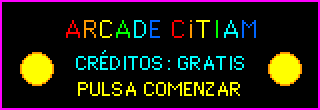
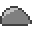
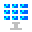
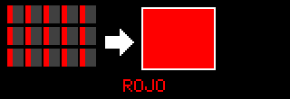
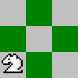

Sala de maquinitas

Este rincón es una parte del sitio de CiTIAM Labs, no un sitio aparte del club. Aquí encontrarás retos de operaciones, programación y ciencias. Los problemas son ejemplos didácticos, no datos meteorológicos ni mediciones reales de Hermosillo.
Si te equivocas, busca qué te enseña ese intento. La estrategia que pruebas importa tanto como el resultado.
Robot Runner
Salta los cactus y las rocas. Atrapa las gotas de agua para ganar puntos extra. Barra espaciadora, clic o toca la pantalla.
Buscacactus
Abre todas las casillas sin pincharte. El número te dice cuántos cactus hay alrededor. Clic derecho, o el botón BANDERITA, para marcar donde crees que hay uno.
Hongotchi: tu mascota es un hongo
Mantén sus tres medidores en verde y crecerá hasta la cosecha. Los medidores bajan de verdad, aunque cierres la página. ¡Regresa mañana a verlo! Si no quieres esperar, usa la máquina del tiempo.
HONGOTCHI
Expedición al Pinacate
Cruza el desierto de Sonora hasta el cráter sin quedarte sin agua. Elige bien: cada decisión cuenta, y los consejos son reales.
Tienes 9 botellas de agua, una mochila y mucha curiosidad.
1. Reto relámpago de matemáticas
Resuelve cinco problemas antes de que termine el reloj. Cada respuesta correcta vale un punto. Aparecerán operaciones de suma, resta y multiplicación en situaciones imaginarias con mapas, plantas y sensores.
Pulsa comenzar para recibir tu primer problema.

2. Programa la ruta del robot
El robot empieza en la esquina inferior izquierda. Debe llegar al panel solar, en la esquina superior derecha, sin chocar con las rocas. Agrega hasta ocho instrucciones, una por cada casilla que avanzará. Puedes borrar la secuencia y volver a empezar.
 Robot
Robot

Roca
Panel solarPrograma: vacío (0/8)
Reto: piensa primero cómo rodear las rocas.

3. Misión desierto: preguntas de ciencia
Responde cinco preguntas sobre Sonora, plantas, energía solar, sensores y matemáticas. Después de cada respuesta aparece una explicación. El orden de las preguntas y de las respuestas cambia en cada partida.
Pulsa comenzar misión cuando estés listo.
4. Memorama de conceptos STEAM
Encuentra las seis parejas que conectan una palabra con su explicación. Voltea dos tarjetas por turno: si forman pareja, se quedan abiertas. Si no coinciden, vuelve a intentarlo y recuerda dónde viste cada concepto.
Cómo ganar: encuentra todas las parejas. El tablero cuenta tus intentos; trata de terminar con la menor cantidad posible.
Pulsa comenzar para mezclar las tarjetas.
5. Laboratorio de sombras
Explora cómo cambia la sombra de un objeto cuando cambia la altura aparente del Sol. Mueve el control: un ángulo pequeño representa al Sol bajo y produce una sombra más larga; un ángulo grande representa al Sol alto y produce una sombra más corta.
Este modelo usa trigonometría con un objeto imaginario de 10 centímetros. No es una medición del clima ni del Sol de hoy; es una simulación para comparar ángulos.
Longitud calculada de la sombra: cm
Mueve el control y observa cómo se alarga o acorta la sombra.


6. Detective de código
Lee el fragmento y descubre qué hace. Este reto practica las etiquetas, los estilos y las acciones que encontrarás en el apartado Programación.
Pulsa comenzar para investigar el primer fragmento.
¿Qué hace este código?
7. Reto RGB: mezcla un color
Las pantallas combinan rojo (R), verde (G) y azul (B). Ajusta los tres controles para acercarte al color objetivo. Cada canal va de 0 a 255; no necesitas acertar exactamente para aprender cómo cambia la mezcla.

COLOR OBJETIVO
TU MEZCLA
RGB(128, 128, 128)
Ajusta los canales y comprueba tu mezcla.
Bitácora del desierto

Una ficha breve puede ser el principio de una investigación. Lee el dato, abre la fuente sugerida y busca otra referencia que lo confirme.
FICHA DE CAMPO CiTIAM
Cargando dato curioso...
¿Quieres un reto mayor?

Ajedrez: juega contra la computadora, resuelve problemas de mate y descubre cómo piensa una máquina.
Taller de bloques: si te gustó la ruta del robot, ahora programa uno con ciclos y sensores.
Pasaporte: cada reto de esta sala vale un sello.
Reto completado
Cuenta qué estrategia te ayudó, qué fue difícil y qué probarías después. Visita la bitácora de proyectos para ver cómo se aplican estas ideas en las actividades del club.